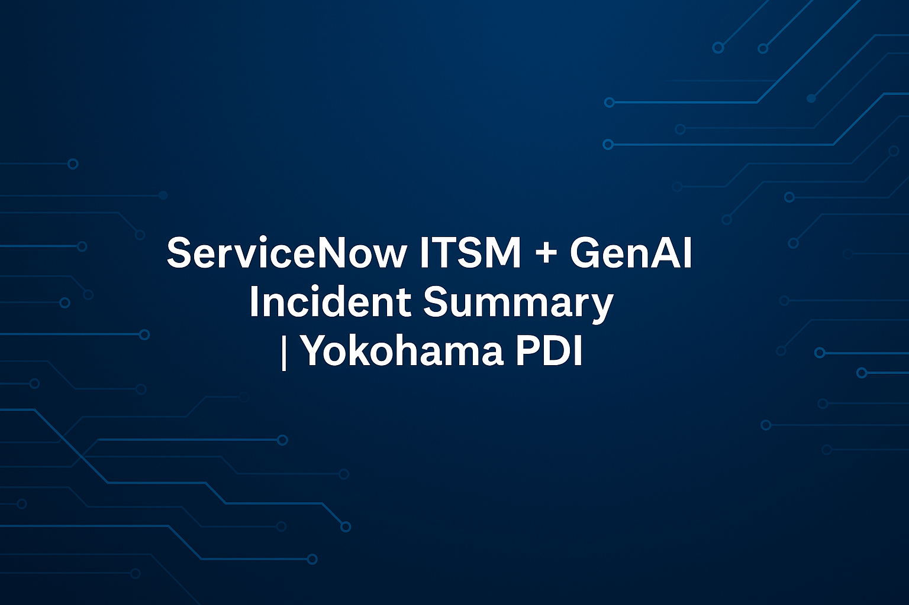

Autonomous Enterprise Brain
Agentic AI decision engine for autonomous workflows.
View RepoAdvanced AI-driven enterprise solutions combining ServiceNow, automation, and intelligent workflows.
Agentic AI decision engine for autonomous workflows.
View Repo
Multi-agent AI automation framework.
View Repo
Enterprise orchestration platform powered by AI.
View Repo
Predictive enterprise simulation system.
View Repo
GenAI-based incident lifecycle automation.
View Repo
Centralized monitoring of AI workflows.
View Repo
AI-driven knowledge improvement system.
View Repo
Predictive AI for proactive issue resolution.
View Repo
AI-based CMDB quality and impact analysis.
View RepoIncident, problem, change, and service request automation.

Incident lifecycle automation.

Predictive incident management.
AIOps, CMDB, service mapping, and event management.

Infrastructure monitoring and event correlation.
Employee service delivery automation and experience optimization.

HR case and workflow automation.
Customer service workflows and engagement automation.

Customer lifecycle automation.
Governance, risk, and compliance automation solutions.

Risk and compliance workflows.

Audit and policy automation.

Enterprise GRC automation.